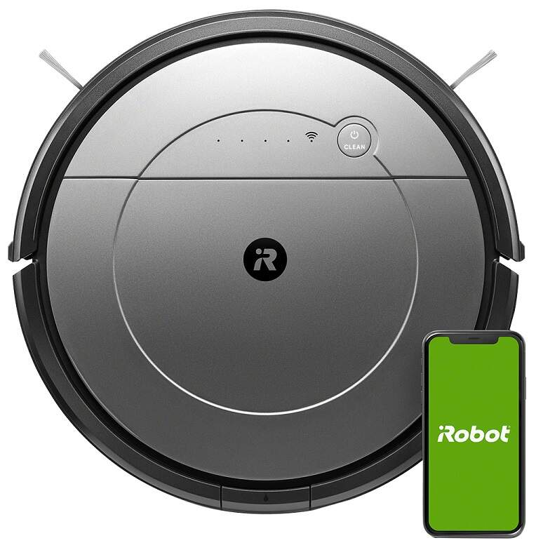
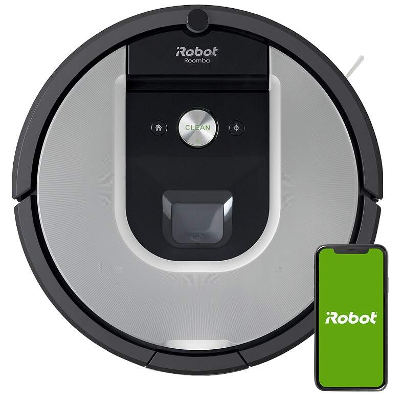
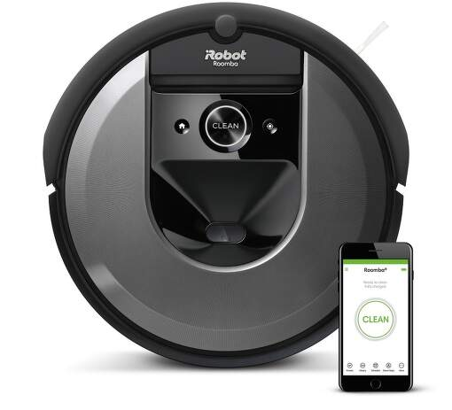
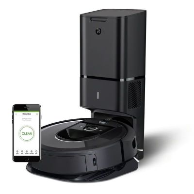

Robotický vysávač iRobot Roomba 698 vykoná vyše 60 rozhodnutí za sekundu, vďaka čomu sa prispôsobí vašej domácnosti a dokonale vyčistí podlahy. 3-stupňový systém čistenia používa dve kefy na rôzne povrchy. Robot vyhľadá a zameria sa na oblasti s väčším množstvom znečistenia, až kým nie sú úplne čisté. Pomocou aplikácie iRobot HOME môžete ovládať a plánovať vysávanie, nech ste kdekoľvek.
Parametre:
Maximálna hlučnosť: 65 dB
Doba nabíjania: 3 hod.
Prevádzková doba: 60 min.
Prekonanie prekážky do výšky: 16 mm
Cena: 179,00 €
IROBOT ROOMBA COMBO (1138)

IROBOT ROOMBA COMBO
Robotický smart vysávač v šedom farebnom prevedení rýchlo a jednoducho uprace všetky druhy podláh. Na výber máte 2 režimy vysávania a 3 režimy mopovania. Dokáže vysávať až 110 minút a po skončení čistenia sa vráti na nabíjaciu stanicu, aby sa dobil a bol pripravený na ďalšie použitie. Ovládať ho budete pomocou mobilnej aplikácia iRobot HOME. Kompatibilný je s hlasovými asistentmi Amazon Alexa a Google Assistant. Veľkou prednosťou je aj tichý chod 64 dB.
Parametre:
Maximálna hlučnosť: 64 dB
Doba nabíjania: 4 hod.
Prevádzková doba: 110 min.
Prekonanie prekážky do výšky: 16 mm
Cena: 249,00 €
IROBOT ROOMBA 971

IROBOT ROOMBA 971
Robotický smart vysávač povysáva celú plochu domácnosti vďaka systému navigácie iAdapt 2.0 s vizuálnou lokalizáciou. Dokáže vysávať až 75 minút a pokiaľ je to potrebné, automaticky sa dobije a pokračuje. 5-krát výkonnejší AeroForce systém dôkladne povysáva prach, špinu, vlasy ale aj zvieracie chlpy. Aplikácia iRobot HOME umožňuje spustiť, naplánovať, alebo upraviť vlastnosti vysávania. Reporty Clean Map zobrazia mapu povysávaného priestoru.
Parametre:
Maximálna hlučnosť: 68 dB
Doba nabíjania: 2 hod.
Prevádzková doba: 75 min.
Prekonanie prekážky do výšky: 16 mm
Cena: 389,00 €
IROBOT ROOMBA I7(7158)

IROBOT ROOMBA I7
Robotický vysávač využíva efektívny pohyb pri vysávaní a celý rad premyslených funkcií. Využíva navigáciu s technológiou Imprint ™ Smart Mapping. Vďaka veľkokapacitnej batérii vytrvale upratuje. Samozrejme s mobilnou aplikáciou iRobot HOME vo vašom smartfóne, alebo tablete môžete vysávač plne ovládať na diaľku. A navyše reporty Clean Map zobrazia mapu povysávaného priestoru. Pomocou virtuálnej steny Dual Mode vytvorte neviditeľnú bariéru, ktorú Roomba neprekročí. Možnosť dokúpiť nabíjaciu a čistiacu stanicu Clean Base.
Parametre:
Maximálna hlučnosť: 58 dB
Doba nabíjania: 1,5 hod.
Prevádzková doba: 75 min.
Prekonanie prekážky do výšky: 20 mm
Cena: 469,00 €
IROBOT ROOMBA I7+ (7558)

IROBOT ROOMBA I7+
Robotický vysávač iRobot Roomba i7+ využíva efektívny pohyb pri vysávaní a celý rad premyslených funkcií. Využíva navigáciu iAdapt® 3.0 s technológiou Imprint ™ Smart Mapping. Vďaka veľkokapacitnej batérii vytrvale upratuje až 75 minút. iRobot Roomba i7+ je natoľko inteligentný, že automaticky dokáže nečistoty vyprázdňovať sám v základnej stanici. Jednorázový sáčok na nečistoty vnútri stanice pojme až 30 zberných košov robota. Samozrejme s mobilnou aplikáciou iRobot HOME vo vašom smartfóne, alebo tablete môžete vysávač plne ovládať na diaľku. Nabíjacia a čistiaca stanica Clean Base™.